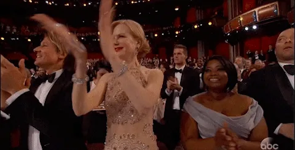

Developing a plan for your website content
“Are you ready to take your website to the next level? Are you tired of bland, boring content that fails to engage your audience? Look no further! These 10 tips will help you create epic, killer website content that will captivate your readers and keep them coming back for more. From crafting a plan to using engaging visuals, these tips will guide you on your journey to creating the ultimate website experience. So, let’s get started and make your website truly epic!”
Having high-quality content on your website is essential for attracting and retaining visitors, as well as for improving your search engine rankings. In this article, we’ll explore 10 tips for creating killer website content that engages your audience and drives results.
- Start with a clear strategy: Before you start creating content, it’s important to have a clear idea of your goals and target audience. What do you want to achieve with your content? Who are you trying to reach? Having a content strategy in place can help guide your efforts and ensure that your content is aligned with your business goals.
- Make it valuable and informative: Your website content should provide value to your audience and address their needs and interests. Whether you’re offering information, entertainment, or solutions to problems, your content should be useful and informative.
- Keep it fresh and up-to-date: Fresh content is important for keeping visitors coming back to your website and for improving your search engine rankings. Make sure to regularly update your content with new and relevant information.
- Use compelling headlines: Your headlines are the first thing that visitors will see, so it’s important to make them catchy and attention-grabbing. Use strong, action-oriented words and keep them concise – aim for around 60 characters or less.
- Use formatting and visuals to your advantage: No one wants to read a wall of text, so break up your content with headings, bullet points, and images. Visuals can help make your content more engaging and easier to digest.
- Keep it easy to read: Use short paragraphs and sentences, and consider using subheadings and bullet points to make your content easier to scan.
- Use internal and external links: Links to other relevant content on your website or to external sources can help improve the credibility and value of your content. Just be sure to use relevant and reputable sources.
- Optimize for search engines: Use keywords and phrases that your target audience is likely to search for, and include them in your headlines, subheadings, and throughout your content.
- Edit and proofread: Typos and grammatical errors can be a turn-off for visitors and can harm your credibility. Be sure to edit and proofread your content carefully.
- Use analytics to track your performance: Use tools like Google Analytics to track your website traffic and see how your content is performing. This can help you identify
Why is it important to make your website content interesting and engaging?
Making your website content interesting and engaging will keep people interested and encourage them to keep reading. It will also make your website more memorable and likely to be shared with others.

By following these 10 tips, you can create website content that is engaging, interesting, and easy to understand. You’ll be able to plan your content, use simple language, and be original and authentic. You’ll also be able to use visuals and formatting to make your content more appealing and easy to read. And by proofreading and regularly updating your website, you’ll be able to maintain a professional and trustworthy image. So, take these tips to heart and start creating killer website content today.